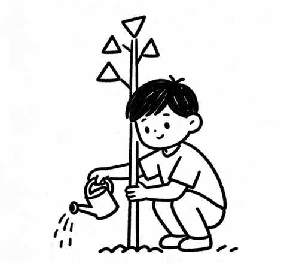
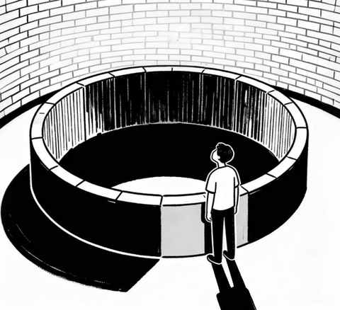
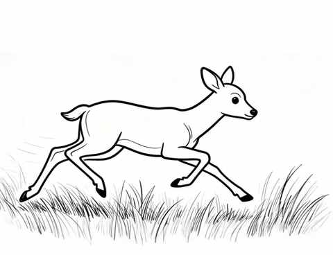
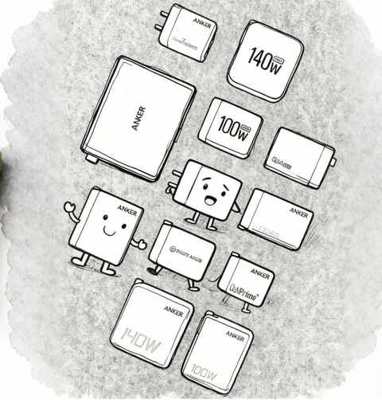

日更，是不断了解自己的过程
一、输入决定输出
刚开始日更的时候，一度在某些文章下面都有一个类型的评论，总有一些人说是 Ai 写的水文。
越到后面越理解，对方发出这样的评论，很合乎逻辑，因为我日常看的多的内容大多情绪的描述过少，以理性和实用的内容为绝对主力。
那么，当我写东西的时候，自然是无限的往这方面看齐，潜移默化中反倒看着像 Ai 写的文章。
某种角度，人和 Ai 一样，你输入什么信息，必然会输出什么信息，而且在大部分时候，我们是不自知的。
环境对人的塑造，也是在这样的潜移默化中进行。
暑期小舅子过来上海，他说出上海站的时候，发现大家都走的好快，他不由自主的也走快了，瞬间感知到氛围的不一样。

二、只能写体验过的东西或事情
真实，这一原则，我无法逾越。
开始敲键盘写的东西或事情，都是真实体验过的，差别在于时间的长和短。
时间长的，感受会更深刻一些，例如：新能源车、播客、Apple Watch……
时间短的，感受有但目前深度不足，例如：跑步、中年人、减肥……
知晓自身的局限性，也是一件很重要的事。

三、 做很多事情，靠的是本能
在复盘从高考到当下，接近 18 年经历的时候，发现我做很多事情，靠的是本能。
没有目的性，没有 特别的 原因，靠的是本能的驱动。
很多关键的决策，亦是这样靠本能决定的，有点类似于第六感，各种信息经过大脑的处理之后，突然有一个想法冒出来。
人们常说的激发潜能，或许换个角度看，就是激发出本能。

四、人到中年之后，越需要确定性
确定性，在中年男人这个群体上的表现之一是：爱买各种充电头。

因为，让充电这件事有确定性，是很有成就感的一件事。
在运动方面，跑步无疑是最受中年人青睐的运动，从各大马拉松比赛的选手数据上也能看出来，排名最为激烈的是 35-39 年龄组。
在休息活动方面，钓鱼是无出其右的，我一年四季跑步的路线相对固定，在每条河的桥边，都有钓鱼佬驻扎，他们不论刮风下雨都在。
近期文章
不禁想问问大家，被Ai工具省下来的时间，都用来做什么了呢？
听播客5年，日均108分钟：这3个收获，让我认识到“声音”的力量
小米高端化成了吗？拿15S Pro当主力机4个月，我有这5个真实感受
90 年，35 岁，E区出发，即将在福州解锁首全马
嘿！还记得“为QQ等级挂机”的岁月吗？来晒晒你的等级吧！
11 个月，开极氪7X跑两万公里，用车总结及好物分享
一个长居省外中年人的合肥印象：记2025的年第4次合肥行
中年减肥成功2年后，才发现运动形式真不重要，守住这3点才能不反弹！
我的两个配图利器：两个APP强强联合，实现1+1 > 2的视觉升级
别慌！和所有Intel版Mac用户共享：3个让我们继续用的理由和2个续命秘籍
中年减肥成功2年后，才发现这5个坑当初要是有人点醒我该多好！
中年减肥成功2年后，才发现维持体重靠的不是毅力，而是这5个微习惯